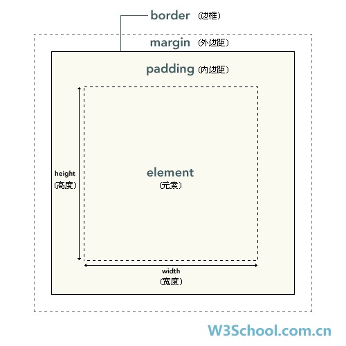

首先抛出2个概念：盒子模型（box model）、HTML的普通流（normal flow）
盒子模型:
- 块状元素
- 行内元素
常用的块状元素
常用的行内元素
设置display:block就是将行内元素显示为块状元素。如:
两种盒子模型的区别:
- 块状元素独占一行，行内元素和其他元素都在一行；
- 块状元素的高度、宽度、行高以及顶和底边距都可设置；行内元素的高度、宽度及顶部和底部边距不可设置；
- 块状元素宽度在不设置的情况下，是它本身父容器的100%；行内元素是根据自身的内容及子元素来决定宽、高度。
CSS盒子模式具备这些属性：内容(content)、填充/内边距(padding)、边框(border)、外边距(margin)。(标准的盒子模型和IE盒子模型是有区别的，IE 盒子模型的 content 部分包含了 border 和 pading，请自行查阅)

- margin会重叠和产生2倍编剧问题，反正我是尽量不用margin；
- box-sizing：border-box；为元素设定的宽度和高度决定了元素的边框盒
HTML的普通流
浏览器在读取HTML源代码的时候是根据元素在代码出现的顺序读取，最终元素的呈现方式是依据元素的盒子模型来决定的。行内元素是从左到右，块状元素是从上到下。
元素在HTML的普通流中会“占位”，而“占位”的大小、位置则是由元素的盒子模型来决定。
Position、Float属性会使元素脱离HTML的普通流
Position属性
position的属性值共有四个static、relative、absolute、fixed。
所有元素在默认的情况下position属性均为static
relative：相对定位，将元素偏离元素的默认位置，但普通流中依然保持着原有的默认位置，并没有脱离普通流，只是视觉上发生的偏移。
absolute：绝对定位，相对这个根元素（父、祖设置了position:relative/position:absolute）来偏移，如果在其节点树中所有父（祖）元素都没有设置position属性值为relative或者absolute则该元素最终将对body进行位置偏移。
- 块状元素设置了position: absolute之后，width变成auto;
- 没有设置top、bottom、left、right属性的话，浏览器会默认设置成auto;
- 注意应用absolute的z-index
Float属性
float的属性值有none、left、right
当元素应用了float属性后，将会脱离普通流，其容器（父）元素将得不到脱离普通流的子元素高度。我们可以用清除浮动来进行处理；
元素同时应用了position: absolute及float属性，则float失效。